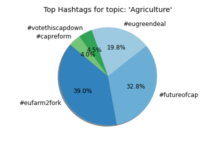
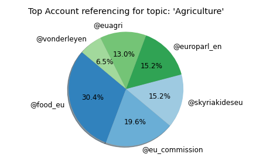
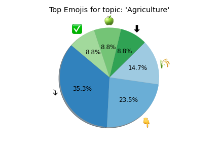
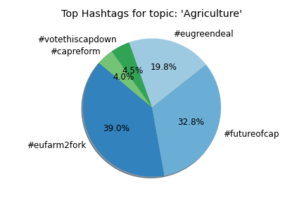
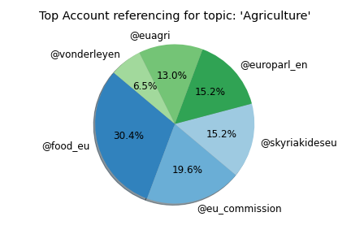
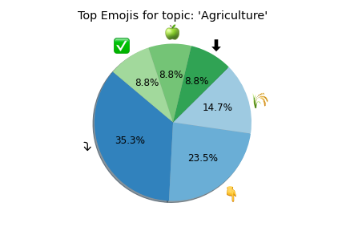

EU-Stance: A Twitter Stance Detection Dataset in English on Topics related to the European Union
In this work, we provided a new dataset in English that can be used for stance detection, i.e. inferring the position of individuals towards specific topics. We propose a method for building the dataset that combines topic modeling, extracting the relevant hashtags, and sampling, to ensure the relevance of the collected data in the context of the overarching area of interest of European Union (EU). Final dataset contains 3,500 tweets covering 17 automatically generated topics on EU-related issues (such as "climate", "Gender equality", "Covid19" etc.) spanning between September 2020 and September 2021. Tweets were labelled based on their stance, which determines whether the author of the tweet is in favour, against, or commenting on a particular topic. In addition, a tweet can be classified as "unrelated". Every tweet is annotated by two different annotators, master students from European Studies, Social Sciences, Law and Data Science. You can access the data by swiping through the tweets and selecting filters on the left.
Insights
Similar Tweets
Statistics
 




